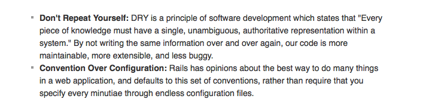

"Rails is a web application development framework written in the Ruby language." - RailsGuides What does this mean? Well basically, Rails is a framework for building websites. It is designed to simplify the task of building complex websites by providing features that it assumes every developer needs. This allows developers to accomplish more while writing less code. Rails has two major guiding principles:

According to this website, Rails is a model-view-cotroller framework. Basically, it separates a web app into three secions: the model, the controller, and the view. The model works with all database interaction, the controller works with the web server interaction and the view compiles the HTML code that users of the website will see. Ruby on Rails is unique in that it takes these three concepts and bundles them into one kit for web development. All these pieces put together allows developers to make complex web apps with ease.
Not only is Rails easy and fun to use, but it is also widely used. Websites such as Github, Twitter, Scribd, and Hulu, all were developed using Ruby on Rails. It is significantly popular among web startups because Rails has a large pool of open source software libraries. Rails has a pretty strict requirements, which means, if you create your web app the 'Rails way', all Rails developers will be able to understand your code. This means that collaboration is easier, development is quicker, and the overall process of making a web application is shared with the Rails community.
I hope this little introduction into 'What is Rails?' has been helpful!